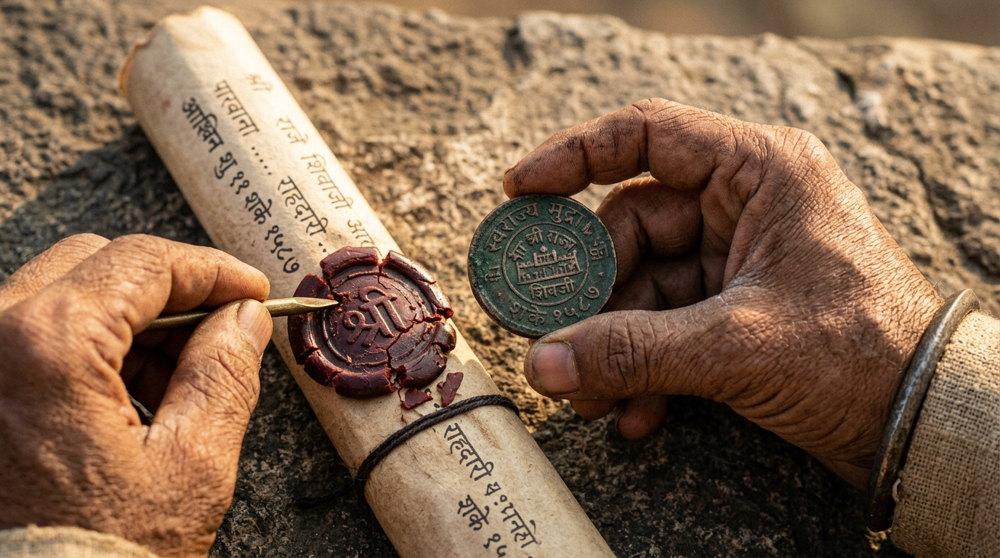
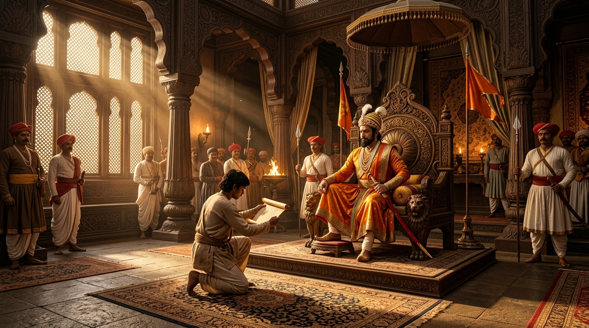
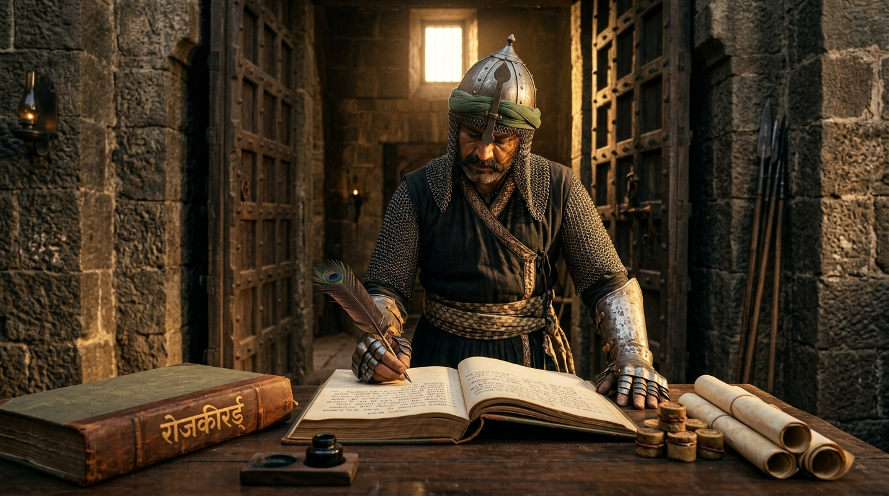

1665 CE — Sahyadri Mountains, Maharashtra
राजगड किल्ल्याचे द्वार
Follow Subedar Yesaji Kank — the legendary guardian
of Rajgad — and discover the secret of Python Decorators.
"Late afternoon. A royal messenger arrives at the iron-spiked gates. Subedar Yesaji Kank stands firm — hand on his shamsher sword. The messenger shouts urgency. The gate does not move."
The messenger insists his news is urgent. Subedar Kank's response:
Correct! Subedar Kank verifies first — no exceptions. The gate stays shut until every check passes.
A Python Decorator is exactly like Subedar Kank. When you call a function, the decorator runs its BEFORE check first — before your function even starts. You cannot skip it. Just like the gate cannot open before Kank's verification.

"Kank holds the copper Mudra to the light. He breaks the wax seal. He checks every mark against the Royal Seal of Swarajya. Only then does his hand move toward the bolt."
What does Subedar Kank's pre-check achieve?
Right! Every check is purposeful. Rajgad was never breached because Subedar Kank never skipped this step.
This is the BEFORE phase of a Python Decorator.
The code inside the decorator that runs before calling your function —
like checking if a user is logged in, logging the start time, or validating inputs.
Kank's Mudra check = decorator's before-code.

"Subedar Kank nods. The iron bolt slides. The messenger kneels before Chhatrapati Shivaji Maharaj and delivers the scroll — his one sacred task. Nothing more. Nothing less."
The messenger has one pure purpose. Press to execute it:
Delivered! The core task is complete — pure, uninterrupted purpose.
The messenger's scroll delivery = your actual function — the one you wrote with def deliver_message():.
The decorator doesn't change what the function does.
It just runs BEFORE and AFTER it.
The MAIN TASK stays pure.

"Mission complete. The messenger turns to leave. Subedar Kank opens the Rojkird. Token number, entry time, exit time — all recorded. After every mission, the record is eternal."
Subedar Kank records the exit. What does this achieve?
Correct! The record is the final seal. No mission is complete without it.
The Rojkird log = the AFTER phase of a Python Decorator.
Code that runs after your function completes —
logging execution time, saving results, sending notifications, cleaning up resources.
Kank's exit log = decorator's after-code.
See how the Rajgad story maps exactly to Python Decorators
@security above a function is like assigning Subedar Kank to guard it. From now on, Kank's protocol runs every time you call that function.Correct! The decorator function is Subedar Kank — it runs before and after your function, just like Kank's protocol wraps every mission.
Exactly right! deliver_message() is the messenger's pure job — the core function. The decorator runs around it, but the function stays clean.
Perfect! print("After") is Kank's Rojkird entry — it runs after the main function completes. You have mastered the three phases! 🏆
You have walked through all five gates, witnessed Subedar Kank's protocol,
and mastered the three phases of a Python Decorator.